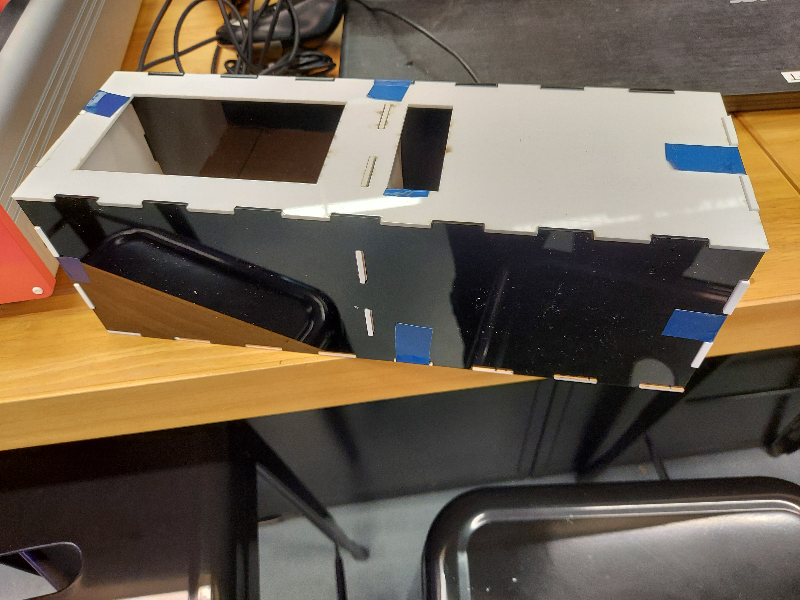
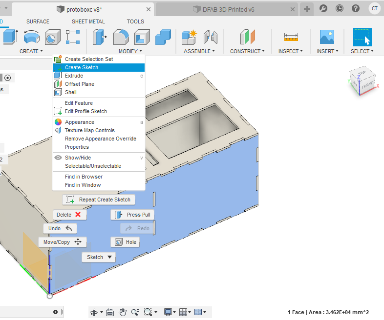
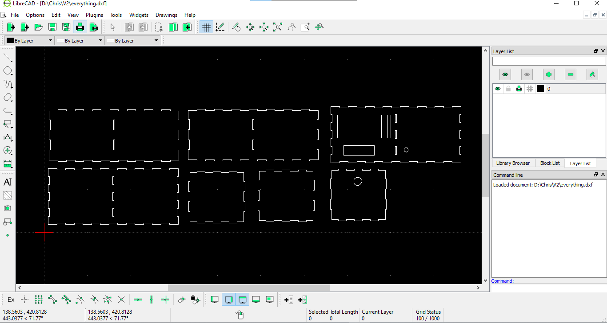
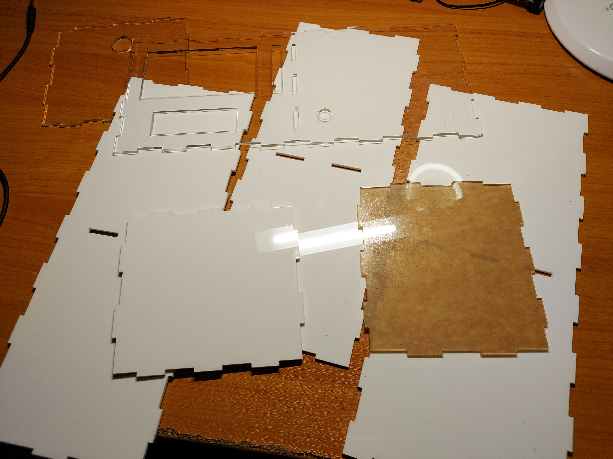

For my project, I will be laser cutting the enclosure that doubles as a water tank.
Here is a prototype I cut from 2mm acrylic scraps. I unknowingly did not realise that the acyrlic was 2mm at the time hence resulting in some loose pieces as well as some odd protrusions.
From this prototype I made a couple of changes, modifying the areas for the LCD and input board.
Thankfully, I used a parametric model so it was rather easy to make the changes required, only having to redo the sketches where I wanted to cut areas for my boards and LCD.
Before laser cutting, I first need to sketch and model the enclosure in Fusion 360 before converting it to the files required for the laser cutter.
I first configured my parameters


Now that the enclosure is modelled, I created sketches of each of the 7 pieces I would need to laser cut.
I then individually imported each piece using librecad to create a .dxf which had all of my laser cut items. This would greatly reduce the time spent at the laser cutter as I could simply import one file with everything instead of individually.
I was able to get a small sheet of clear acrylic from the T11C, unfortunately it was too small to cut the entirety of my panels but I was able to most crucially cut the top piece from it as well as other pieces, this will allow a nice look into the interior of the enclosure.
Here are the laser cut pieces:
I removed the paper backing on the acrylic and then assembled it.


I then proceeded to apply some silicone sealant between the edges to seal and ensure that it wouldn't leak whilst sort of gluing the pieces together.